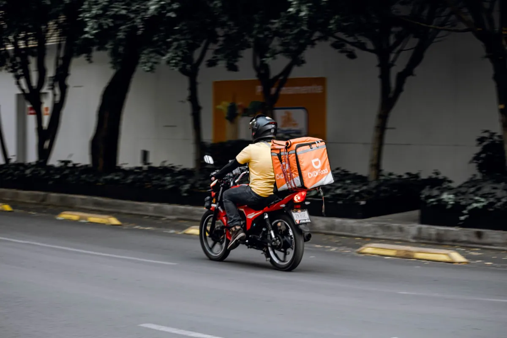

Alternativa ao iFood: como vender direto e pagar menos sem sumir do mapa

Quem busca alternativa ao iFood normalmente não quer abandonar o aplicativo no susto: quer parar de pagar comissão sobre o cliente que já é seu. Essa diferença muda a estratégia. O iFood traz demanda; o erro é depender dele para tudo.
Quanto a comissão pesa
Guias e reportagens de 2026 citam 12% de comissão no plano em que a loja entrega e 23% quando o iFood entrega, mais cerca de 3,2% sobre pagamentos online e mensalidade acima de certo faturamento. Os valores mudam: confira os seus no contrato e no app.
Com essas taxas, R$30.000 por mês em pedidos pagam R$3.600 a R$6.900 só de comissão, antes da taxa de pagamento. Veja mais contas em cardápio digital sem comissão.
Quais são as alternativas
- Outros marketplaces: 99Food, aiqfome e outros. Ampliam alcance, mas o modelo segue sendo plataforma; verifique condições atuais e cobertura na sua cidade. Veja o comparativo com 99Food.
- WhatsApp manual: sem comissão, mas limitado pela sua capacidade de responder.
- Canal próprio: cardápio digital com link seu, preço fixo e base de clientes sua.
- Todos juntos: o caminho que costuma dar mais margem.
Comparação rápida
- Encontrar cliente novo: marketplace ganha. No canal próprio, você leva o tráfego.
- Custo da recompra: canal próprio ganha, com custo fixo.
- Dados do cliente: canal próprio ganha, porque a lista fica com você.
- Sua marca: canal próprio ganha, sem concorrente ao lado.
O caminho sem perder faturamento
- Continue no marketplace como vitrine.
- Monte o canal próprio e conecte os marketplaces ao mesmo painel.
- Divulgue o link fora do app: bio, Google, status e cartão na loja, respeitando as regras do contrato de cada plataforma.
- Dê um motivo para pedir direto, como cupom ou cashback.
- Reative a base com campanhas no WhatsApp.
Passo a passo completo em como sair do iFood e vender direto.
O que muda com o Menuzia
Cardápio próprio, PDV, mesas, impressão e integrações por R$97/mês no Básico, sem comissão. No Completo, R$149/mês, entram robô no WhatsApp, disparos e sistema financeiro.
Buscas relacionadas
O que donos de restaurante e delivery pesquisam antes de contratar — cada busca leva para a página que responde a ela:
Perguntas frequentes
Qual a melhor alternativa ao iFood?
Para a maioria das lojas, é manter o marketplace para ganhar clientes novos e usar um canal próprio sem comissão para a recompra.
Preciso sair do iFood para usar o Menuzia?
Não. Os pedidos do iFood, do 99Food e do aiqfome entram no mesmo painel do seu cardápio próprio.
Quanto o iFood cobra de comissão?
Fontes de 2026 citam 12% quando a loja entrega e 23% quando o iFood entrega, além de taxa de pagamento online. Confira os valores do seu contrato no app.
O canal próprio traz cliente sozinho?
Não. Você precisa divulgar por redes sociais, Google, WhatsApp e anúncios. A vantagem é que o cliente conquistado fica com você.
O Menuzia cobra comissão?
Não. O valor é fixo: R$97/mês no Básico ou R$149/mês no Completo, sem fidelidade.
Fale com um especialista do Menuzia
Sem comissão por pedido e sem fidelidade. Planos a partir de R$97/mês, com configuração feita pela nossa equipe.
Quero conhecer o Menuzia →